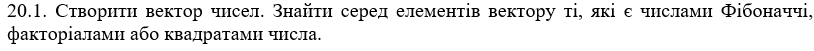
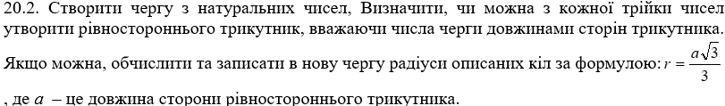
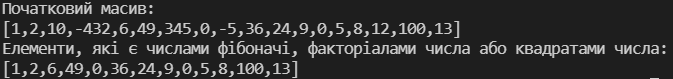
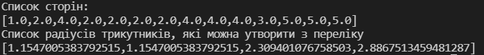

Лабораторна робота 6.
Обробка структур типу векторів і матриць, стеків та черг мовами функціонального програмування.
Варіант 20
Автор
| ПІБ: | Семечненко Тарас Олександрович |
| Курс: | 4 |
| Група: | ІПЗ-42 |
| Рік навчання: | 2021-2022 |
Зміст
Мета
Умова задачі
Структура програми
Обгрунтування вибору середовища та мови програмування
Код програми
Скрін-шоти
Аналіз достовірності результатів
Висновки
Мета
Обробка структур типу векторів і матриць, стеків та черг мовами функціонального програмування
Умова задачі
Задача 1
Задача 2
Структура програми
Схема задачі 1

Схема задачі 2

Обгрунтування вибору середовища та мови програмування
Середовище програмування: VS Code
Середовище обране через:1) Це моє основне середовище в якому програмую, і його можна використовувати майже для будь-якої мови програмування.
2) Має всі необхідні функції для програмування і працює набагато швидше в порівнянні з іншими IDE.
Мова функціонального програмування: Haskell
Мова обрана через:1) Це одна з самих популярних та нових функціональних мов програмування.
2) Дуже багата документація.
3) Мова має дуже приємний та простий синтаксис.
Код програми:
Завдання 1:
Завдання 2:
Посилання на код 1 завдання
Посилання на код 2 завдання
Скрін-шоти:
Результат виконання 1 програми:
Результат виконання 2 програми:
Аналіз достовірності результатів
В першому завданні нам дано масив чисел: [1, 2, 10, -432, 6, 49, 345, 0, -5, 36, 24, 9, 0, 5, 8, 12, 100, 13]
В якому числа фібоначі: 1, 2, 5, 8, 13
факторіали чисел: 1, 2, 6, 24
квадрати чисел: 1, 49, 0, 36, 9, 0, 100
В другому завданні в нас є черга з чисел: [1, 2, 4, 2, 2, 2, 2, 4, 4, 4, 3, 5, 5, 5]
З цієї послідосності ми можемо виділити наступні рівносторонні трикутники:
a) 2, 2, 2. Радіус = 2 * sqrt(3) / 3 = 1.15
b) 2, 2, 2. Радіус = 2 * sqrt(3) / 3 = 1.15
c) 4, 4, 4. Радіус = 4 * sqrt(3) / 3 = 2.30
d) 5, 5, 5. Радіус = 5 * sqrt(3) / 3 = 2.88
Висновки
В л.р. було виконано 2 завдання за допомогою мови Haskell.
В першому завданні було реалізовано 3 функції: перша перевіряє чи є число факторіалом іншого числа, друга перевіряє чи є число квадратом іншого числа, а третя перевіряє чи є число в послідовності фібоначі. Скомпонувавши ці функції можна відфільтрувати вхідний масив даних і залишити тільки ті елементи, які виконують одну з трьох умов.
В другому завданні була реалізована фукнція, яка перебирає кожне число з черги та дивиться, чи можна скласти рівносторонній трикутник з трьох послідовних значень. Для цього я реалізував 2 фукнції, де одна перебирає послідовність чисел, а інша дивиться чи можна з заданих трьох сторін скласти рівносторонній трикутник. В кінці програма повертає радіуси кіл, для знайдених трикутників.